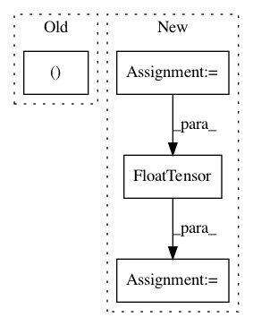

b44364811b14bde01d84554624a9bffa0e4976e3,examples/cora_gcn.py,,,#,41
Before Change
model = Net()
if torch.cuda.is_available():
train_mask, val_mask = train_mask.cuda(), val_mask.cuda()
test_mask, model = test_mask.cuda(), model.cuda()
optimizer = torch.optim.Adam(model.parameters(), lr=0.01, weight_decay=0.005)
After Change
return pred.eq(data.target.data[mask]).sum() / mask.size(0)
acc = []
for run in range(1, 101):
model.conv1.reset_parameters()
model.conv2.reset_parameters()
old_val = 0
cur_test = 0
for _ in range(0, 200):
train()
val = test(val_mask)
if val > old_val:
old_val = val
cur_test = test(test_mask)
acc.append(cur_test)
print("Run:", run, "Test Accuracy:", acc[-1])
acc = torch.FloatTensor(acc)
print("Mean:", acc.mean(), "Stddev:", acc.std())
In pattern: SUPERPATTERN
Frequency: 3
Non-data size: 4
Instances
Project Name: rusty1s/pytorch_geometric
Commit Name: b44364811b14bde01d84554624a9bffa0e4976e3
Time: 2018-03-07
Author: matthias.fey@tu-dortmund.de
File Name: examples/cora_gcn.py
Class Name:
Method Name:
Project Name: rusty1s/pytorch_geometric
Commit Name: d8a075668b6e9cdf4c08f6c7285e5c7d2fbf5332
Time: 2017-10-17
Author: matthias.fey@tu-dortmund.de
File Name: torch_geometric/graph/geometry.py
Class Name:
Method Name: edges_from_faces
Project Name: rusty1s/pytorch_geometric
Commit Name: 946352c486f5de2c1174a9403bde50ec11db5315
Time: 2017-11-01
Author: matthias.fey@tu-dortmund.de
File Name: torch_geometric/datasets/faust.py
Class Name: FAUST
Method Name: __getitem__